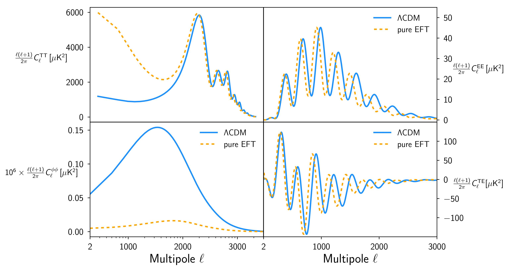
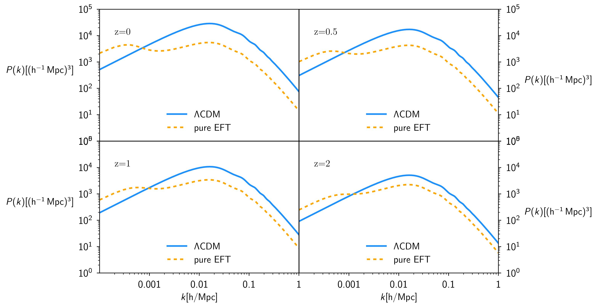

Pure EFT model
In the pure EFT branch one works with a given subset of the EFT operators (possibly all), treating their coefficients as free functions. The background is treated via the EFT designer approach, i.e. the expansion history is fixed and a viable form for Ω is chosen. In order to use EFTCAMB in the pure mode the user has to choose besides the expansion history the functional form of all the γi. For this example we will illustrate how to select a built-in parametrizaion for the functional form of the EFT functions. We will also use a built-in form for the equation of state of dark energy. Finally, we will show the corresponding observables for a set of viable parameters.
Selecting the model:
• The first step will be to select the flag we want to use. Since we are interested in the pure EFT parametrization we will go in params_EFT.ini and set EFTflag=1 and PureEFTmodel = 1;
• Because the model we consider in this example falls in the Horndeski sub-class, we can select in params_EFT.ini the option PureEFTHorndeski = T , with which γ4, γ5 and γ6 will be ignored and handled internally.
• We now need to define the EFT functions. For this example we choose to parametrize them with a power law, given by
To do so, we go to
params_EFT.ini and we select the corrisponding flags:
where the 0 stands for the zero parametrization and the 3 for the power law ( take a look at
params_EFT.ini for many more built-in options!)
• Let us now select the evolution of the equation of state for the dark energy. We will use a CPL parametrization, i.e. wDE=w0+wa(1-a).
One has to go to params_EFT.ini and select EFTwDE = 2 .
• At this point, since we want to show some physical observables for this model we need to chose a set of viable parameters, in the
params_EFT.ini. First of all we choose the values of w
0 and w
a of the CPL parametrization, by setting
Then we chose the parameters in the power law definition of Ω(a), namely Ω
0 and β
0
And the same for γ
30 and β
3
Stability module:
One can easily verify that by using the default stability requirements with the above set of parameters one gets an instability warning saying that ''Model specific stability criteria are not met''. The present example serves to show how to use and/or modify the stability module in EFTCAMB, then we will take advantage by it showing how to modify one of the stability requirements.
One can interact with the stability module of EFTCAMB by setting the flags (see numerical notes for the definitions of the stability conditions)
equal to true (T, the default choice) or false (F) in
params_EFT.ini.
In our example the last stability condition is not satisfied, since the choice of the CPL parameters leads to a not verified cosmic acceleration prior, then we get the error ''Model specific stability criteria are not met'' and the spectra are not be computed. Thus, in order to run the model, we have to set
EFT_additional_priors=F.
Let us remark that this example is purely illustrative, its physical interpretation is out of our scope. In general the user can deal with the above stability requirements according to the physical model under analysis by turning to T/F any of the above stability flags. However, while the last two conditions are related to physical requirements the first one just ensures that the perturbations in the dark sector are stable (i.e. they do not grow exponentially). Turning this flag to F may cause the observables to be completely destroyed, thus it needs to be carefully handled.
Computing the observables:
• In EFTCAMB the outputs are handled in the same way as in CAMB. In particular one can look at the following files:
ROOT_scalCls.dat: l multipole, TT, EE, TE, PP, TP Power spectra. Some of these outputs for our example are plotted below:

ROOT_matterpower.dat: k mode, P(k) (matter Power spectrum at the chosen redshift). Again, the P(k) for our example is plotted below, at different redshift:
